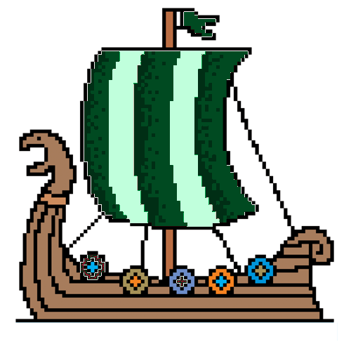

Player is presented with 10x10 grid and has a fleet of 5 ships:
carrier – 5 cells
battleship - 4 cells
cruiser – 3 cells
submarine – 3 cells
destroyer – 2 cells
Following the instructions, player clicks on the grid to start the setup.
Player clicks on the one of the suggested grid cells to continue positioning the first ship.
Playes keep clicking until the first ship is positioned.
When ship is positioned, occupied cells are greyed out, adjacent cells are also disabled (blocked out).
Player has the option to return the ship back to the marina with the "Go back" button.
Player repeats steps 2-5 for each ship.
The player is not allowed to position new ships into the occupied cells.
Player can press the button "Start Game" only when all of the ships are positioned.

Computer Setup Logic
Once "Start Game" button has been clicked, computer randomly generates its own setup and stores ships' location data in an object.
Game Logic
Page with 2 boards is displayed:
One is player's with positioned ships visible
One is opponent's with empty grid (hidden ships)
It is player's turn.
Player clicks on a cell in a 10x10 opponent's grid. To fire, player follows his first click with clicking the "Fire!" button or pressing SPACE bar.
A message is rendered (either "Hit!" or "Miss!"). "Fire" button greys out. The clicked cell is assigned a color (one for "Miss", another for "Hit").
It is opponent's turn.
Computer randomly chooses one cell to attack on the player's field. Computer has a built-in logic to target adjacent cells once it records a "Hit" on player's board until player's ship sinks.
A message is rendered (either "Hit!" or "Miss!"). Once player clicks on the next cell, "Fire" button is activated again.
Repeat steps 2-7.
If a computer's ship is completely out, it is revealed, all of its cells are assigned a color.
Once all of the ships are out for one of the players, "You won" or "Computer won" message is rendered.
Player can press "Restart game" button at any point in the game.
Player can't click on disabled cells to fire.
Player can click "Show computer setup" to see computer's hidden ships. Player can then hide their positions.